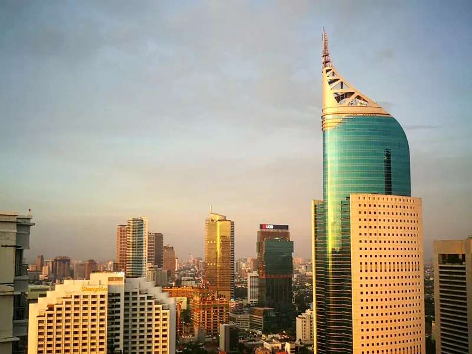
Bandung Jakarta
Rp135.000/seat
Cempaka Putih, Kuningan, Senayan, Kelapa Gading, dan sekitarnya
Booking Bandung ↔ Jakarta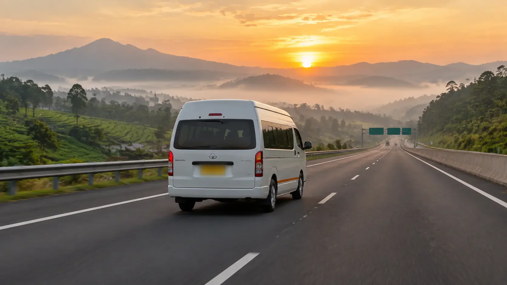
Travel door to door tiap hari
Tidak perlu ke pool, tidak perlu ojek dua kali. Sopir kami jemput di depan rumah, lalu antar sampai alamat tujuan.
Legalitas & pool
Nomor izinnya kami tulis terbuka di sini, bukan cuma "ada kok izinnya" di chat. Kendaraannya pelat kuning, dan pool kami bisa didatangi.
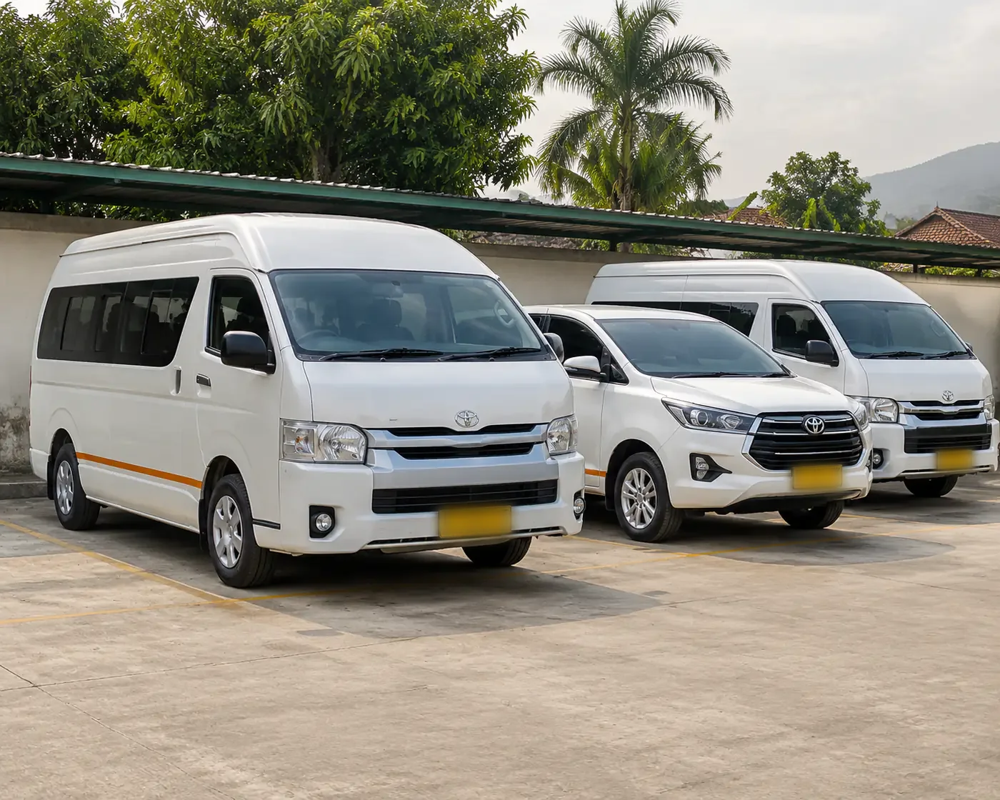
Penumpang tetap dijemput di rumah. Pool ini buat kamu yang mau lihat mobilnya dulu dan memastikan kami benar-benar ada.
Pool BandungJl. Terusan Buah Batu No. 88, Bandung Pool JakartaJl. Pemuda Raya No. 21, RawamangunBuka tiap hari 05.00 sampai 22.00.
Rute & harga
Harga di bawah ini per seat, sudah termasuk jemput di alamat asal dan antar sampai alamat tujuan. Tidak ada biaya tambahan di jalan.

Rp135.000/seat
Cempaka Putih, Kuningan, Senayan, Kelapa Gading, dan sekitarnya
Booking Bandung ↔ Jakarta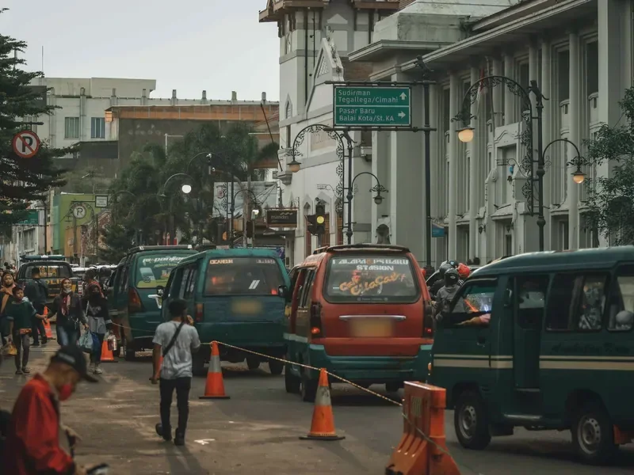
Rp145.000/seat
Margonda, Cinere, Sawangan, Cimanggis, dan sekitarnya
Booking Bandung ↔ Depok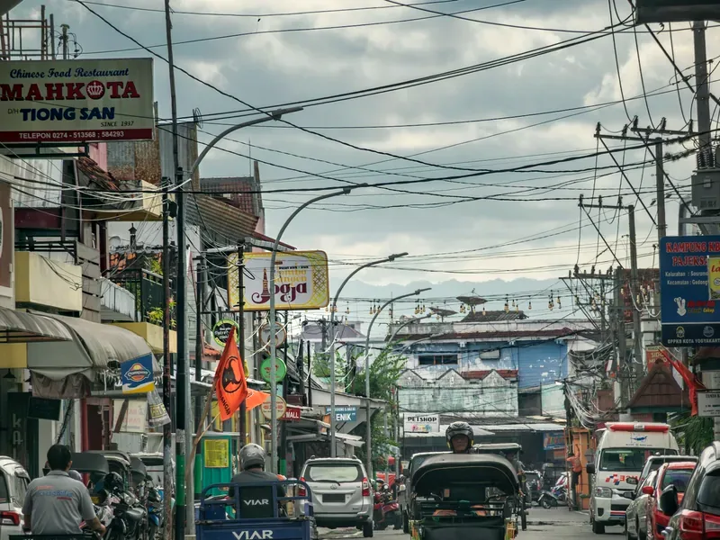
Rp150.000/seat
Bekasi Kota, Harapan Indah, Jatiasih, Cikarang, dan sekitarnya
Booking Bandung ↔ Bekasi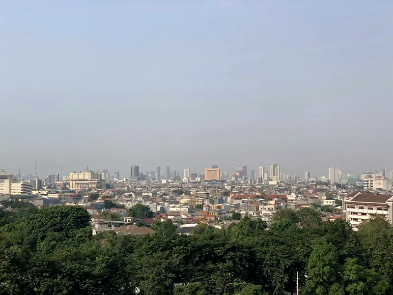
Rp165.000/seat
Tangerang Kota, BSD, Alam Sutera, Bintaro, dan sekitarnya
Booking Bandung ↔ TangerangArah sebaliknya (Jabodetabek ke Bandung) harga dan jamnya sama. Titik jemput di luar area yang disebut tetap bisa, admin hitungkan dulu lewat WA.
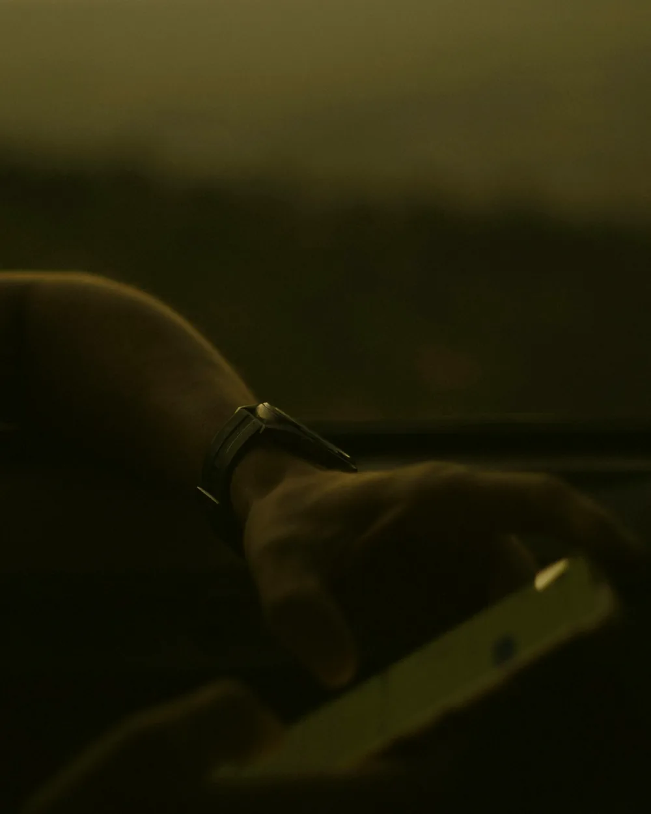
Cara booking
Tanpa aplikasi, tanpa daftar akun, tanpa isi formulir panjang. Cukup chat seperti biasa.
Rute yang mau diambil, tanggal berangkat, dan alamat jemput. Contoh: "Bandung ke Bekasi, Sabtu 6 September, jemput di Sukajadi."
Dalam 5 menit admin balas sisa seat dan jam jemput di rumah, biasanya 45 menit sebelum jam berangkat.
Boleh bayar tunai ke sopir waktu naik, boleh transfer dulu kalau mau seat lebih aman di tanggal ramai. Transfer hanya ke rekening atas nama PT Lintas Trans Priangan, bukan rekening pribadi.
Kenapa nyaman
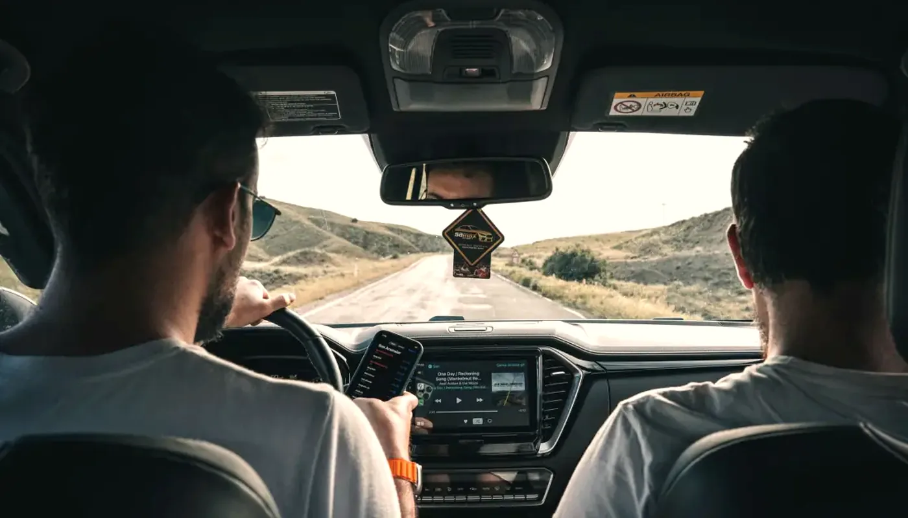
Hemat sekitar Rp60.000 ongkos ojek dua kali, dan tidak perlu bawa koper naik turun angkot menuju pool.
Bukan bus penuh. Kursi 2-2, masih ada ruang kaki, dan tidak berhenti tiap sebentar untuk naik turun orang.
Sopir kami karyawan sendiri, bukan borongan harian. Tidak ngebut, tidak merokok di dalam mobil, tidak cari penumpang tambahan di jalan.
Jam 05.00, 09.00, 13.00, dan 17.00 tetap jalan walau penumpang belum penuh. Tidak ada acara nunggu setoran dulu.
Armada
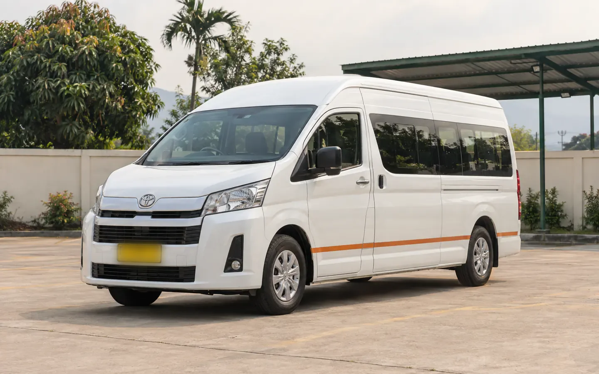
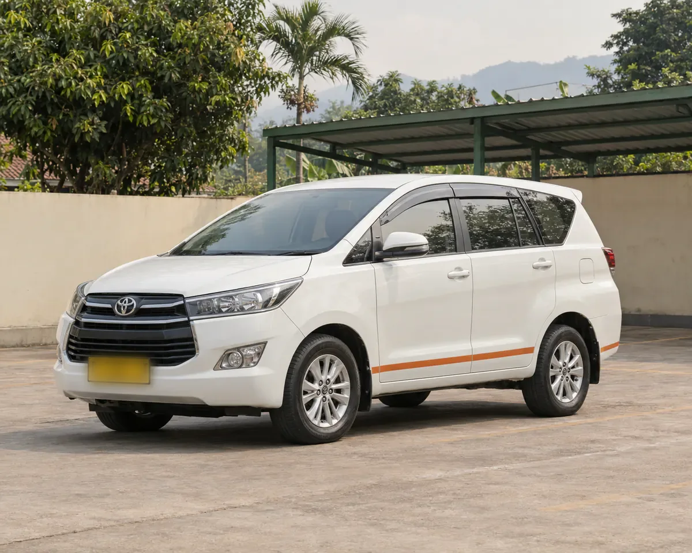
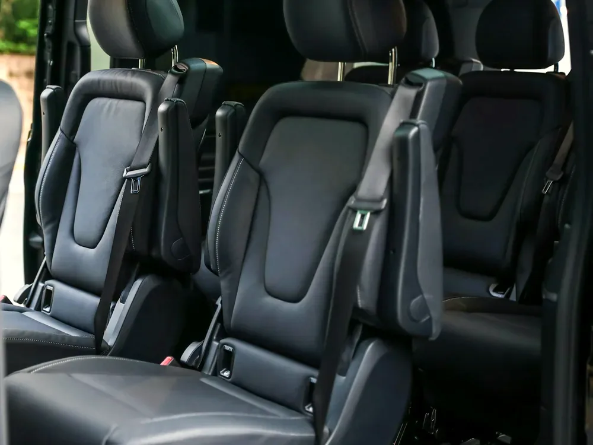
Kata penumpang
★★★★★
Biasanya pulang kampung tuh drama, dari kosan ke pool udah keluar 40 ribu sendiri. Ini tinggal chat, jam 05.00 mobil udah di depan gang. Nyampe Bekasi diturunin persis depan rumah.
★★★★★
Saya bawa balita 2 tahun sama stroller. Sopirnya bantuin masukin barang, terus nawarin berhenti di rest area waktu anak saya rewel. Tenang banget, nggak diburu-buru.
★★★★★
Tiap Jumat balik Bandung, tiap Senin subuh ke Tangerang lagi. Setahun lebih pakai Lintas Trans, jam 05.00 belum pernah molor lebih dari 10 menit. Itu yang saya cari.
FAQ
Boleh. Satu seat dapat 1 koper besar plus 1 tas jinjing, gratis. Kalau bawa lebih dari itu, misal kardus atau sepeda lipat, kabari waktu booking supaya kami siapkan mobil dengan bagasi lebih lega. Tambahan barang besar dikenakan Rp25.000 per koli.
Bisa. Charter Innova (maksimal 6 penumpang) Bandung ke Jakarta Rp950.000, Hiace Premio Rp1.400.000, sudah termasuk sopir, bensin, dan tol. Jam berangkat bebas, titik jemput boleh lebih dari satu rumah. Chat admin untuk rute lain.
Anak di bawah 3 tahun yang dipangku tidak dihitung seat, gratis. Umur 3 tahun ke atas dihitung satu seat penuh karena harus punya kursi sendiri. Kalau bawa stroller atau car seat, tulis di chat supaya kami sisakan ruang.
Sopir menunggu maksimal 10 menit di titik jemput, karena penumpang lain sudah di dalam mobil. Lewat dari itu kami arahkan menyusul ke pool atau pindah ke jam berikutnya tanpa biaya tambahan, selama masih ada seat kosong hari itu.
Batal sampai H-1, uang kembali penuh. Kalau sudah transfer, kami kembalikan ke rekening kamu paling lambat 1x24 jam. Batal di hari keberangkatan kena potongan 50% karena seatnya sudah ditahan. Kalau cuma mau pindah jam atau tanggal, gratis selama masih ada seat.
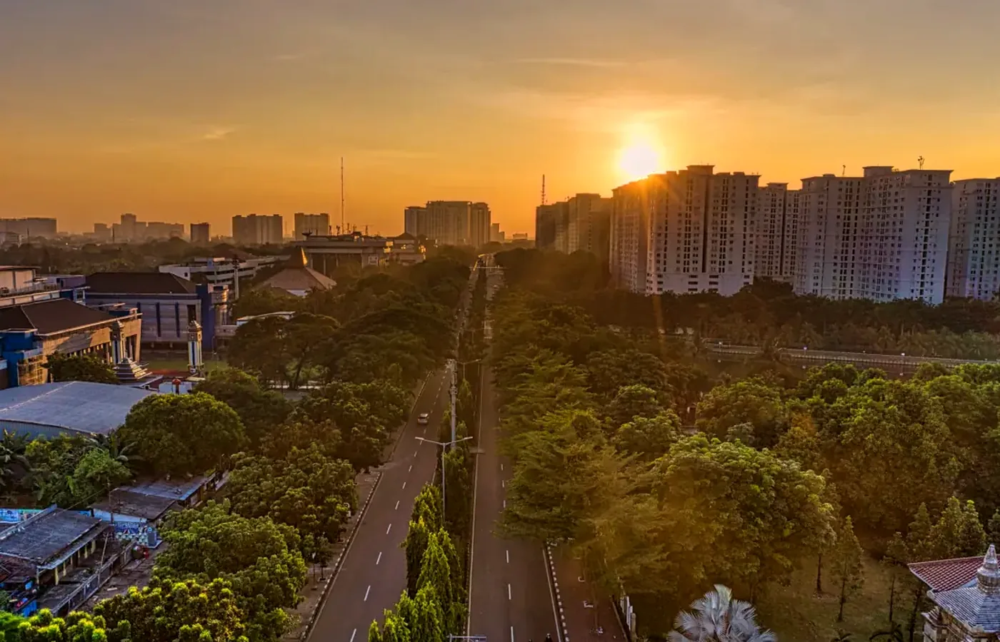
Akhir pekan dan tanggal merah biasanya penuh sejak dua hari sebelumnya. Sebut tanggal dan alamat jemput, admin langsung cek sisa seat.
Cek sisa seat via WAAdmin online 05.00 sampai 22.00, rata-rata balas 5 menit.